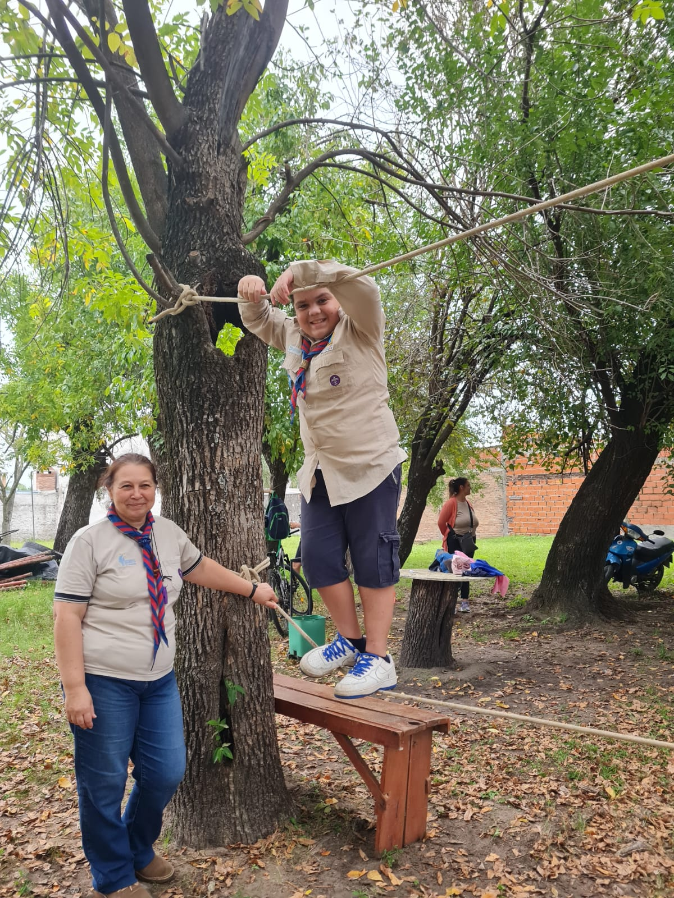
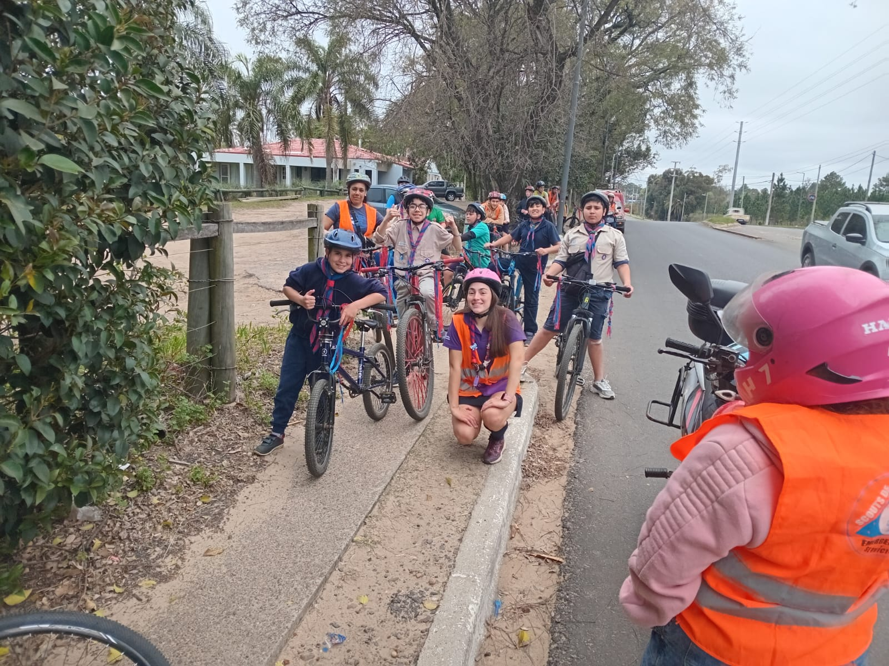
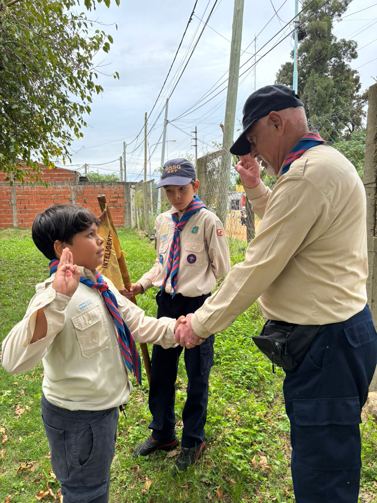
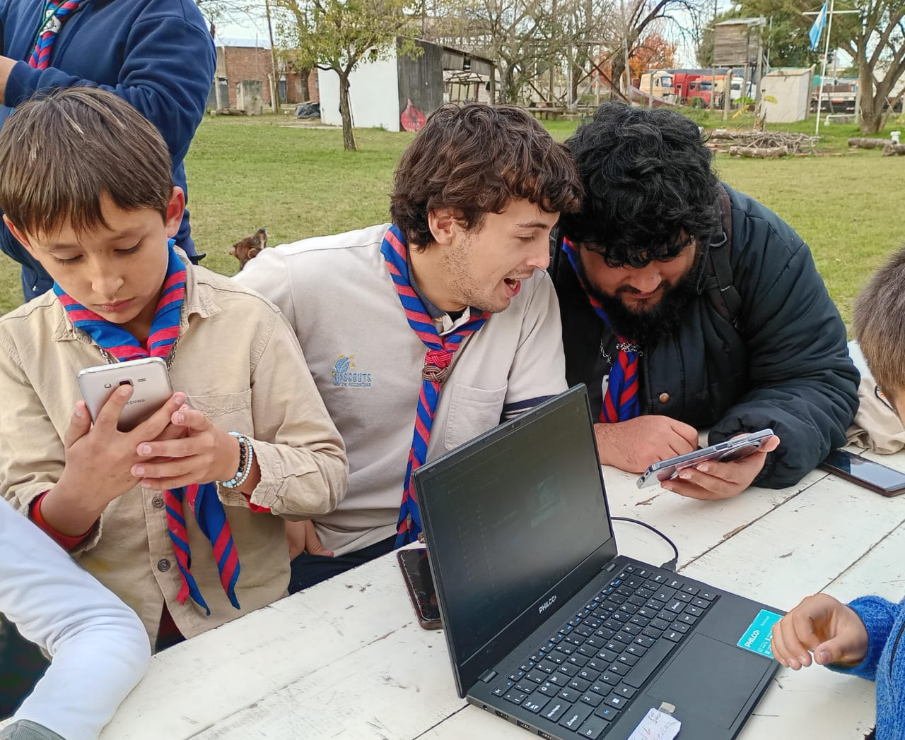
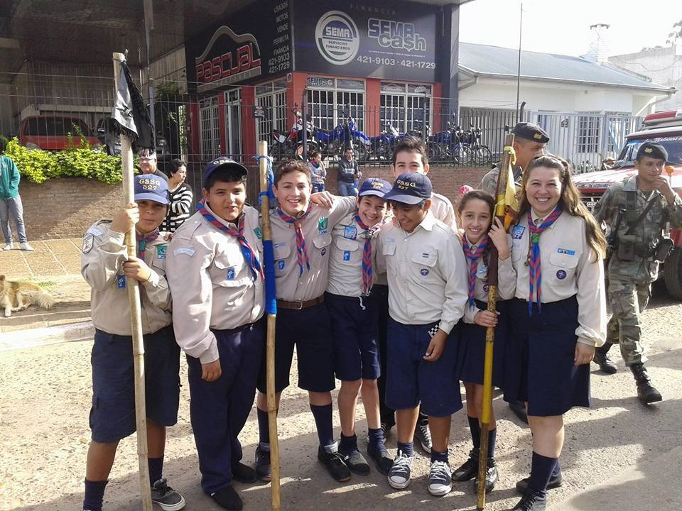

Naturaleza
Vivimos y cuidamos el ambiente. La naturaleza es nuestra aula.
Somos una comunidad de niños, jóvenes y adultos que aprendemos jugando, sirviendo y viviendo la naturaleza. Siempre listos, para servir.
Cada campamento, cada fogón y cada servicio refuerza los valores que nos forman como personas.
Vivimos y cuidamos el ambiente. La naturaleza es nuestra aula.
Estamos listos para ayudar a quien lo necesite, sin esperar nada a cambio.
Aprendemos a trabajar en equipo, a liderar y a ser parte de algo más grande.
Exploramos, descubrimos y nos superamos. La vida es una gran aventura.
Desde 1985 formamos generaciones de scouts. Estas son algunas postales de nuestra historia, campamentos y momentos compartidos.
El Grupo Scout Salto Grande nació en 1985 en el corazón de la ciudad, con la misión de ofrecer a niños y jóvenes un espacio de educación no formal basado en los valores del escultismo.
A lo largo de estos años, cientos de familias pasaron por nuestras filas, compartiendo campamentos, excursiones, servicios comunitarios y, sobre todo, amistades para toda la vida.

Punte Mono
Bicicleteada
Pase Scout
Taller de Edición de Videos
Desfile de 9 de JulioCada etapa tiene su propio desafío, su método y su color. Descubrí la tuya.
Los más pequeños aprenden jugando, con la fantasía de la selva y los lobatos.
La patrulla es la protagonista. Aventura, especialidades y vida al aire libre.
Travesías, proyectos y desafíos personales. Se empieza a elegir el propio camino.
Servicio, vocación y comunidad. La etapa de devolver todo lo aprendido.
Más de 35 años de campamentos, fogones y servicios. Entrá al Libro de Oro y recorré las memorias de cada rama.
Explorar el Libro de OroSeguinos en redes o visitanos cualquier sábado. ¡La puerta está siempre abierta!
Publicamos fotos, novedades y fechas de campamentos. ¡Sumate a la comunidad!
804 Córdoba, Concordia, Entre Ríos, Argentina